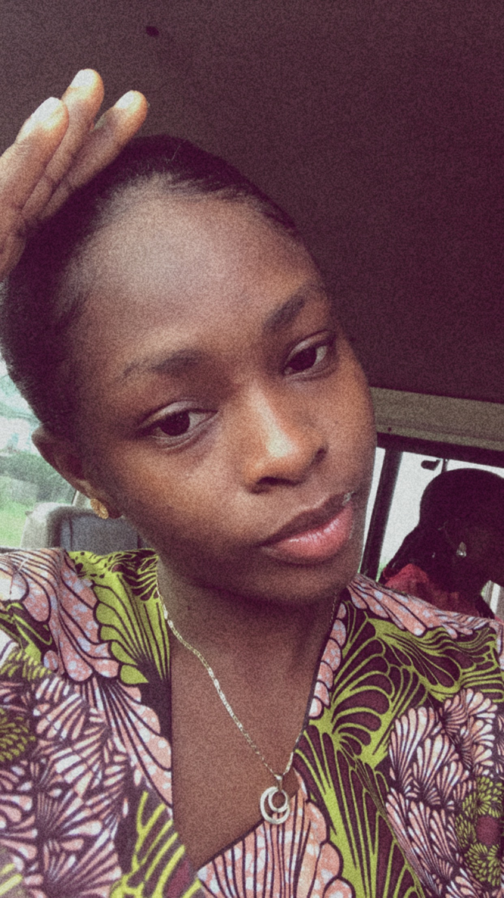

About Elizabeth
My name is Elizabeth Oritsemiyemi Godfrey,I'm an Itsekiri by tribe from Delta State ,Nigeria.
I am a graduate of Mechanical Engineering from the Federal University of Petroleum Resources Effurun .
I'm a frontend devloper in training with knowledge in few stacks( I'm too humble). I love and enjoy learning new things, sleeping , reading Novels and strolling. Currently serving my country in Rivers State.
Thank You, that's all i know about me for Now.